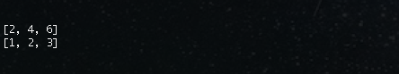

Enumerable::map
Sun Nov 2nd, 2014
Collections objects like arrays, hashes, sets, and ranges typically include the Enumerable module. The Enumerable module provides these objects with all kinds of collection related-methods, which are defined by the each method of their relevant class. In other words, classes that want to use the Enumerable have to define an instance method called each. Like this:
The map Method
This method returns a new array with the results of running the given block once for every element in "enum" (the collection object map is called on).
There are a few important aspects of the map method:
- It always returns a new array.
- The returned array is always the same size as the original array.
- Each of the elements of the returned array corresponds to the element in the same position in the original array.
For example:
Output:
map Vs. map!
The map! method is the destructive version of map. It does the “mapping” in-place. An important point to realize here is that the map! therefore has to be defined in the Array class and not in the Enumerable module. The reason for that is, doing an in-place mapping only makes sense if the original collection object is already an array.